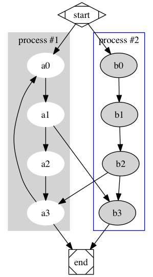
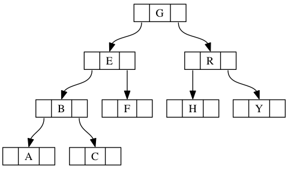
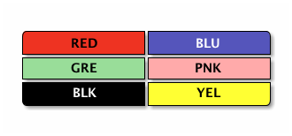
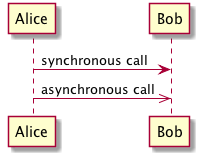

Emacs/Org-mode Notes
Table of Contents
1 ☰
1.1 Meta Notes
1.2 Books
1.2.1 DONE Combo #1
1.2.3 DONE JavaScript: The Good Parts
1.2.4 DONE Domain Specific Languages
1.2.5 INPROGRESS Effective Java
1.2.6 DONE Don't Make Me Think
1.2.7 DONE Clean Code
1.2.8 INPROGRESS Deep Learning
1.2.9 INPROGRESS Async JavaScript
2 Quick Q&A
- save file: c-x c-s
- open/create file: c-x c-f
- edit openned file (buffer): c-x b, c-x c-b
- expand/collapse: tab, shift-tab
- goto header: c-c c-b/f/u
- add item: c-enter, alt-enter
- create link: c-c c-l
- add code block:
<s<TAB>, java, c-c ' - add file path: alt-]
- toggle raw input: alt-x toggle-font-lock
- hide, summary, fold: {{{, begin-hide, end-hide, }}}
- bookmark helper: add to boorkmark url
javascript:(function(){prompt('','[['+location.href +']['+document.title.replace(/ [-,|].*$/,'')+']]')})()
3 Basics
3.1 Emacs Basics
C-[x f](find-file),C-[x v](find-alternate-file), 如果你 刚才 find 错了 file 的话, 就用这个重新打开一个文件)C-x i(insert-file)to current position, 插入一个文件C-[x s](save-buffer): save, 保存C-[x w](write-file): save as, 另存C-[x c](save-buffers-kill-emacs),y→ save&exit,n→ nothing, 关闭F10(menu-bar-open)M-x clipboard-yank(paste),(clipboard-kill-ring-save)(copy),(clipboard-kill-region)(cut)M-x revert-buffer- run cmd:
M-!, orESC ! M-h: mark paragraph, 超级好用!!!M-h M-| tr -d ' ' RET: (shell-command-on-region) sort & output to mini buffer 比如M-h M-| wc -c可以统计字符数目。C-u ESC ! date +%s RET: 1454333299, 就像 Vim 里的:r!date +%s- 综上,
M-!(exclamation 对比 execute)是 shell 脚本M-&(ampersand 对比 async) 是异步的M-|(bar 对比 buffer) 会把选中的 region 重定向作为输入
- shell mode, Emacs 里有三种 Shell.
(setq shell-file-name "/bin/zsh")- for password input:
(send-invisible)
- dired mode
M-x diredorC-x d(重要!!!) 如果你用了C-[x d]会用 brief 模式打开路径，比起 dired 功能弱一些。 {,C}-{n/p},SPCv(dired-view-file), 只读模式打开查看q(View-quit)关闭查看=(what-line)显示自己现在的行号d(dired-flag-file-deletion),x(dired-do-flagged-delete),m,D, 注意dx和mD这两种搭配.R(rename)C(copy), 3C copy three filesi和RET不一样。=i= 是在当前 dired buffer 里打开子目录, 而ENTER是新建一个 新建一个 buffer 打开Z: compressing & uncompressing (in place),(auto-compression-mode)(这个命令太粗暴)!: execute command, e.g.!sort,!sort * > output,*是当前选中的文件的文件名#: flag emacs autosaved file, 类似#filename#, 方便地处理 Emacs 自己的"垃圾", 同理还有~文件dpu: delete, up, undo (撤销删除标记)- 几中标记
**: mark executable, 这几个 mark 很有意思*/: mark dir*@: mark symbolic%m: mark reg match files (filename), 按照文件名 reg 择取%g: mark reg match files (file content), 按照内容 reg 择取, 这个太刁+: create dir, 新建目录, 好像没有 create file 的命令, 可以考虑用!touch fileR: multiple files? then mv (to a dir)M-x print-buffer: send to printer (好像没什么用…)M-x man: man page- 别看多，其实都是简单的内容。
C-/(undo), Emacs 没有 redo, 但是这个 undo 功能完虐 redoC-[x c](close)，如果你试了一下，可以用C-g取消C-[x f](open file),C-[x s](save file)C-w是剪切,M-w是复制C-h {a, c/k, f, v, i, m}帮助!!! Emacs 必知必会.- a : search for command
- c : describe key briefly
- k : describe key
- f : describe function
- v : describe varible
- i : info doc
- m : describe mode
- 记得有事没事看看下面有没有提示，因为 Emacs 还是很 considerate 的。
比如打开帮助窗口后，它会用“
C-w C-o/C-x 1” (delete-other-windows) 提醒你如何关闭。C-x 0可以关闭当前窗口，C-x b(switch-to-buffer) 可以返回原来的窗口（如果你被新弹出的窗口打扰了的话。） M-x cmd(exec command)ESC ?, M-?两者等价, 前者好按, 后者便于连续使用。所以，你可以用ESC x代替M-x了。 （虽然你用了 evil-mode 的话，这个功能也不能用了）{C,M}-{f/b}(char, word),{C,M}-{a/e}(line, sentence),{C,M}-{n/p}(line, ?), M 比 C 层次更粗/高- 鉴于你是用的是 neo 键盘布局，
C-{f/b}（等于left/right）和C-{a/e}（等于home/end）没什么卵用。 而且，你用了 evil-mode 后，用 vim 的特性就行。 如果不知道自己的键绑定是怎样的，用C-h c来查看。 M-{f/b}移动单词倒是可以，不过相比C-left/right也没啥优势。- 唯一牛逼的，可能就是
M-{a/e} {C,M}-{d,k}(delete next char, word), (delete line, sentence)C-u <num>数字前缀(作为参数)C-g(取消, 建议把C-M-g也设置为取消, 不然老按错)(global-set-key (kbd "C-M-g") 'keyboard-quit)C-l(上中下)，会拽住当前行一起移动。DEL,BackpaceC-SPC([de]mark),C-w(剪切),{C,M}-y(粘贴, 奇怪的是在 Vim 里, yank 是复制…)C-[x b],C-x b(切换 buffer)，前者列出所有的 buffer，后者直接跳转到上一个 buffer。C-x {1,0,2,3}(窗口操作),C-M-v(另一个窗口滚屏), 如何关闭帮助窗口?:C-x 1,C-{w o}C-x 4 C-f(在另一个窗口 find-file)，find-file 就是打开 file。C-[x s](save-buffer),C-x s(save-some-buffers)C-[x q]: toggle buffer! readonly (只读模式太好用!).C-k: kill buffer- 记住, 有些地方只读模式可以用
q退出 buffer, 挺方便. (这是 help-mode 的功能) M-x revert-buffer, like:e!in Vim，其实就是重新载入。M-x recover-file(Crash 后用, 如果你那么不幸的话…)- Echo Area, Mode Line, Mini Buffer
[C-s KEYWORDS {RET(正好命中), C-g(取消), Left(差点命中), Right(差点命中), DEL (错了, 重新输入)}]搜索什么的,C-r是反向搜索.M-s是 regexp 搜C-S-Backspace=(kill-whole-line)=，但是没有 HOME + C-k 好用。C-SPC: set marksset-mark-command(用两次, 不然就成了 Shift 选中功能), 返回 鉴于蛋疼的 neo 布局在 win 上的情况，可以用C-@代替。 mark: 用C-{u,x} C-SPC, 还有C-x SPC(rectangle-mark-mode)
3.2 Org-mode Basics
3.2.1 Basic Emphasis
- 加粗
- 斜体
- 下划线
代码verbatim删除- 定义
- α
- the utility of the best (highest-value) choice we have found so far at any choice point along the path in the "max" mode of minimax
- β
- the utility of the best (lowest-value) choice for the "min" mode of minimax
- 超链接 (font-lock-mode), (org-toggle-link-display)
Show org-mode hyperlink as plain text
用
C-[c l]来插入链接。 - 引用
绝望之为虚妄, 正与希望相同. — 鲁迅
*** Basic Emphasis
- *加粗*
- /斜体/
- _下划线_
- ~代码~
- =verbatim=
- +删除+
- 定义
+ \alpha :: the utility of the best (highest-value) choice we have
found so far at any choice point along the path in the
"max" mode of minimax
+ \beta :: the utility of the best (lowest-value) choice for the
"min" mode of minimax
- [[http://orgmode.org][超链接]] (font-lock-mode), (org-toggle-link-display)
[[https://emacs.stackexchange.com/questions/5387/show-org-mode-hyperlink-as-plain-text/5390#5390?newreg%3Db7ea4e63da8f488eb517fda77f4561b6][Show org-mode hyperlink as plain text]]
用 =C-[c l]= 来插入链接。
- 引用
#+BEGIN_QUOTE
绝望之为虚妄, 正与希望相同.
--- 鲁迅
#+END_QUOTE
- *加粗*
- /斜体/
- _下划线_
- ~代码~
- =verbatim=
- +删除+
- 定义
+ \alpha :: the utility of the best (highest-value) choice we have
found so far at any choice point along the path in the
"max" mode of minimax
+ \beta :: the utility of the best (lowest-value) choice for the
"min" mode of minimax
- [[http://orgmode.org][超链接]] (font-lock-mode), (org-toggle-link-display)
[[https://emacs.stackexchange.com/questions/5387/show-org-mode-hyperlink-as-plain-text/5390#5390?newreg%3Db7ea4e63da8f488eb517fda77f4561b6][Show org-mode hyperlink as plain text]]
用 =C-[c l]= 来插入链接。
- 引用
#+BEGIN_QUOTE
绝望之为虚妄, 正与希望相同.
--- 鲁迅
#+END_QUOTE
插入 org 代码: <s<TAB> 然后输入 org, 然后 =c-c '=
3.2.2 Tables
- Example 1
N N2 N3 N4 sqrt(n)sqrt[4](N)1 1 1 1 1 1 2 4 8 16 1.4142136 1.1892071 3 9 27 81 1.7320508 1.3160740
3.2.3 Code Blocks
- 多语言高亮
用
<s TAB插入代码, 后面跟语言, 比如 js, python. 用 =c-c '= 编辑代码 (新窗口并打开相应的 mode)Translate this code from a
forloop into awhileloop that does the same thing.for i in range(1,100): print ("i = ", i)还可以用
C-{c c}来 evaluate。 - 行号, 指示 (referencing)
1: #include <stdio.h> 2: 3: int main( int argc, char **argv) 4: { 5: int a = atoi( argv[1] ); 6: int b = atoi( argv[2] ); 7: printf( "a + b = %d + %d = %d\n", a, b, a+b ); 8: return 0; 9: }
- 第 3 行 的
argc是 count of args (arguments),argv是 arguments 数组.
使用方法:
-n加上行号-r加上 ref, 代码后面加上(ref:reflink)后面用 link 来找到它:(reflink)- 用
(ref:h)开头的 ref 来常亮一行.
#+BEGIN_SRC c -n -r #include <stdio.h> int main( int argc, char **argv) (argv) { int a = atoi( argv[1] ); (h1) int b = atoi( argv[2] ); (h2) printf( "a + b = %d + %d = %d\n", a, b, a+b ); (h3) return 0; } #+END_SRC + [[(argv)][第 (argv) 行]] 的 ~argc~ 是 count of args (arguments), ~argv~ 是 arguments 数组.
- 第 3 行 的
3.3 MISC
- untabify
4 公式
Just LaTeX/MathJax
We see that there are three variable assignments that make the whole expression true: \(x\) is false, \(y\) is true, and \(z\) is true; \(x\) is false, \(y\) is false, and \(z\) is true; and \(x\) is false, \(y\) is false, and \(z\) is false.
Boole's and De Morgan's Laws
- \(\neg F \equiv T\)
- \(\neg T \equiv F\)
f(n) =
\begin{cases} n/2, & \text{if \(n\) is even} \\ 3n+1, & \text{if \(n\) is odd} \end{cases}5 图片
5.1 居中 <c TAB

#+BEGIN_CENTER #+BEGIN_CENTER [[./images/lena.jpg]] #+END_CENTER
5.2 多图
 |
 |
|
| Kernel is 10x10, all values equal to 0.01 | Kernel is 20x20, all values equal to 0.0025 | Kernel is 20x1, all values equal to 0.05 |
We can also achieve a sharpening effect.
|
 |
From Wikipedia
{kind=link}
6 自定义宏
定义宏可以极大简便笔记的生成。
6.1 TODO hide 宏
显示/隐藏部分内容。使用方法：
{{{begin-hide}}}
内容添加到这里
{{{end-hide}}}
6.2 summary 宏
用来生成一个特定格式的总结块。使用方法：
{{{begin-summary}}}
内容添加到这里
{{{end-summary}}}
比如：
- \(P(a|b) = P(b|a)P(a)/P(b)\) is Bayes' formula ("Bayes' rule", "Bayes' theorem"); it is just a rewrite of the rules of probability. It is required that \(P(b) \neq 0\).
- Sometimes, we only want to know if \(P(h_1|e) > P(h_2|e)\) (probability of hypothesis 1 is greater than probability of hypothesis 2, given the evidence). Then we only have to compare \(\alpha P(e|h_1)P(h_1)\) vs. \(\alpha P(e|h_2)P(h_2)\), where \(\alpha = 1/P(e)\), which we never need to calculate.
- \(P(h)\) is the "prior" of a hypothesis (cause/explanation) \(h\).
- \(P(h|e)\) is the "posterior" of \(h\), given evidence \(e\) is observed.
6.3 fold 宏
折叠部分内容。使用方法：
{{{begin-fold(标题写在这里)}}}
内容添加到这里
{{{end-fold}}}
member(5, [1, 2, 3]). member(X, [1, 2, 3]). foobar(1, [1, 2, 3]). foobar(1, [1, 1, 1]).
member(5, [1, 2, 3]). % --> false member(X, [1, 2, 3]). % --> X = 1 or 2 or 3 foobar(1, [1, 2, 3]). % --> true foobar(1, [1, 1, 1]). % --> false
提纲挈领
7 扩展功能
7.1 Beyond Basics
C-[x f](find-file),C-[x v](find-alternate-file), 如果你 刚才 find 错了 file 的话, 就用这个重新打开一个文件)C-x i(insert-file)to current position, 插入一个文件C-[x s](save-buffer): save, 保存C-[x w](write-file): save as, 另存C-[x c](save-buffers-kill-emacs),y→ save&exit,n→ nothing, 关闭F10(menu-bar-open)M-x clipboard-yank(paste),(clipboard-kill-ring-save)(copy),(clipboard-kill-region)(cut)M-x revert-buffer- run cmd:
M-!, orESC ! M-h: mark paragraph, 超级好用!!!M-h M-| tr -d ' ' RET: (shell-command-on-region) sort & output to mini buffer 比如M-h M-| wc -c可以统计字符数目。C-u ESC ! date +%s RET: 1454333299, 就像 Vim 里的:r!date +%s- 综上,
- *
M-!(exclamation 对比 execute)是 shell 脚本, * - *
M-&(ampersand 对比 async) 是异步的, * - *
M-|(bar 对比 buffer) 会把选中的 region 重定向作为输入. *
- *
- shell mode, Emacs 里有三种 Shell.
(setq shell-file-name "/bin/zsh")- for password input:
(send-invisible)
7.2 dired mode
- dired mode *
M-x diredorC-x d(重要!!!) * 如果你用了C-[x d]会用 brief 模式打开路径，比起 dired 功能弱一些。{,C}-{n/p},SPCv(dired-view-file), 只读模式打开查看
q(View-quit)关闭查看=(what-line)显示自己现在的行号d(dired-flag-file-deletion),x(dired-do-flagged-delete),m,D, 注意dx和mD这两种搭配.R(rename)C(copy), 3C copy three filesi和RET不一样。=i= 是在当前 dired buffer 里打开子目录,
而
ENTER是新建一个 新建一个 buffer 打开Z: compressing & uncompressing (in place),
(auto-compression-mode)(这个命令太粗暴)!: execute command, e.g.!sort,!sort * > output,*是当前选中的文件的文件名#: flag emacs autosaved file, 类似#filename#, 方便地处理 Emacs 自己的"垃圾", 同理还有~文件dpu: delete, up, undo (撤销删除标记)- 几中标记
**: mark executable, 这几个 mark 很有意思*/: mark dir*@: mark symbolic%m: mark reg match files (filename), 按照文件名 reg 择取%g: mark reg match files (file content), 按照内容 reg 择取, 这个太刁+: create dir, 新建目录, 好像没有 create file 的命令, 可以考虑用!touch fileR: multiple files? then mv (to a dir)
M-x print-buffer: send to printer (好像没什么用…)M-x man: man page
7.3 Calendar
M-x calendar: 日历模式, 也很刁C-x [], year, 去年/明年C-x {}, month, 上月/下月gd: goto date, 指定日期- 写 diary
id: insert daily diary, 四个 insert, day/week/month/yeariw: insert weekly diaryim: insert monthly diaryiy: insert year diary
- and a lot more hacks
7.4 Text Editing
C-[x e](eval-last-sexp)is an interactive compiled Lisp functionC-q TAB(edit-tab-stops) → a literal tab, 这叫 Verbatim 插入.(setq-default tab-width 4)(setq-default indent-tabs-mode nil)C-x h(mark-whole-buffer) 选中全部, 记得选中本段吗?M-hM-x untabify,M-x tabify, 类似 Vim 里的:set [no]expandtab再:retab- text-mode
S-{left/right}: 在+,-,*,1), etc, 方便地切换 bullet 样式M-m:(back-to-indentation), 其实不一定是 back, 类似 Vim 的^ESC C-o:(split-line)(C-o 是 open-line, 还有一个 picture-open-line, 但是不总可用){increase/decrease}-{left/right}-margin,defvar(standard-indent)(auto-fill-mode)C-x .:(set-fill-prefix), 可以把本行光标前的字符设置为 prefix, 再用M-q(fill-paragraph)center-region,center-paragraph,center-line,set-justification-center- outline-mode, 其中
C-[cp]和C-[cf]用得最多.C-[c {f/b}]C-[c {n/p}]
- Rectangle commands
- Picture mode
- left, right, up, down:
C-c {<,>,^,.} - upright, upleft, downleft, down right:
C-c {',`,/,\} C-[c {f,b}]: move cursorC-o: blank line (注意(picture-open-line)和(open-line)的区别)- 发现一个有趣的现象，ESC RET 如果在行末，那就是在下面添加 entry，否则是上面。
- left, right, up, down:
- Artist mode
C-[c a o]: =(artist-select-operation)- spray-can, 有快捷键
C-[ca] S - eclipse,
C-[c a] e - line
- circle
C-c C-a C-f: artist-select-fill-char, 设置一个 fill 的字符C-c C-a C-k: 剪切C-c C-a M-w: 复制C-c C-a C-y: 粘贴(每点击一次,就粘贴)C-c C-a v: vaporize-line, 就是删除线条C-c C-a C-d: delete char, 和鼠标右键一样
7.5 Language Support
indent-regionc-set-stylec-toggle-auto-statec-toggle-auto-hungry-statec++-mode-hook- java support
(jde-global-classpath) cperl-mode,perl-mode
7.6 Version Control
C-x v v: commit & save,(vc-next-action), 提交修改C-x C-c: commit commit messageC-x v u: undo, revert from staged,(vc-revert-buffer)C-x v =:(vc-diff)牛逼到爆!! 后面还讲了 ediff, 更牛逼的样子C-x v d: (vc-directory), 有点 git status 的感觉C-x v l: print log, 跟 git log 类似, 不知道是否可以切换pretty=oneline- 所有的 VC 相关函数都绑定在
C-x v前缀, 你会很快熟悉. 只要记住 一个字母就够了. C-x v i: =(vc-register), 把当前文件加到版本控制中, insert?- 一个使用流程, 把代码下载, register (就是用 VC 管理), 然后修改, 然后 "C-u C-x v =" 产生一个 patch, 方便打补丁.
C-x v ~: (vc-revision-other-window), 就是把以前的版本 retrieve 出来- (vc-rename-file)
C-x v a: (vc-update-change-log), Git 不可用.(vc-clear-context): 重启 VC(ediff-revision)
8 GTD
c-[c x i]: check in timec-[c x o]: check out timec-[c x e]: edit effortc-[c x j]: goto clock!c-[c x r]: time expense report
9 Extras
9.1 Hotkeys (c -> f,b,u) best orgmode
- Org-mode Cheatsheet
c-[c n/p]next/previous heading (may not same level)c-[c f/b]next/previous heading (same level)c-[c u]up a headingm-RETinsert next itemc-RETinsert next sectionm-left/rightup/down level- cc: re align table
a b c take aoei aoei - c-c ': edit code in another buffer
- c-[c l]: add link
- c-[c t]: rotate todo state
- c-c .: timestamp,
- c-[c q]: set tags
[100%]todo[X]drink[X]take
- M-S-RET: checkbox, c-[cc] toggle
- M-up/down: move up/down list item, M-S-up/down: move up/down tree stem
- c-[c x v]: toggle preview image
- 注释，不显示在页面上的内容：
example #+BEGIN_COMMENT aoeit aoientr #+END_COMMENT
<e: example, <c: code, <q: quote - nav.org 里面的内容：
* ☰ - [[./index.org][Main Entry]] ** Meta Notes - [[./00000-emacs-org-mode.org][Emacs/Org-mode Notes]] ** Books *** DONE [[./00001-combo-001.org][Combo #1]] **** DONE 金字塔原理 **** TODO Beast Machines: Transformers (cartoon) **** DONE 论持久战 **** DONE 一看就懂的经济常识全图解 **** DONE 刻意练习 **** DONE 系统之美 **** DONE 邓小平时代 *** INPROGRESS [[./00006-combo-002.org][Combo #2]] **** DONE 新经济, 新规则 (Kevin Kelly) **** DONE 麦肯锡问题解决方法与技巧 *** DONE [[./00002-javascript-the-good-parts.org][JavaScript: The Good Parts]] *** DONE [[./00004-domain-specific-languages.org][Domain Specific Languages]] *** INPROGRESS [[./00003-effective-java.org][Effective Java]] *** DONE [[./00005-dont-make-me-think.org][Don't Make Me Think]] *** DONE [[./00007-clean-code.html][Clean Code]] *** INPROGRESS [[./00008-deep-learning.org][Deep Learning]] *** INPROGRESS [[./00009-async-javascript.html][Async JavaScript]]
- C-[c j] jump
- C-c *: list -> stem
- C-c ^: sort
- C-c |: insert table
- 关于对齐：
#+BEGIN_SRC c printf("hello world\n"); #+END_SRC - Easy templates
s #+BEGIN_SRC ... #+END_SRC e #+BEGIN_EXAMPLE ... #+END_EXAMPLE q #+BEGIN_QUOTE ... #+END_QUOTE v #+BEGIN_VERSE ... #+END_VERSE c #+BEGIN_CENTER ... #+END_CENTER C #+BEGIN_COMMENT ... #+END_COMMENT l #+BEGIN_EXPORT latex ... #+END_EXPORT L #+LATEX: h #+BEGIN_EXPORT html ... #+END_EXPORT H #+HTML: a #+BEGIN_EXPORT ascii ... #+END_EXPORT A #+ASCII: i #+INDEX: line I #+INCLUDE: line
9.2 Special SRC: Images
digraph G {
subgraph cluster_0 {
style=filled;
color=lightgrey;
node [style=filled,color=white];
a0 -> a1 -> a2 -> a3;
label = "process #1";
}
subgraph cluster_1 {
node [style=filled];
b0 -> b1 -> b2 -> b3;
label = "process #2";
color=blue
}
start -> a0;
start -> b0;
a1 -> b3;
b2 -> a3;
a3 -> a0;
a3 -> end;
b3 -> end;
start [shape=Mdiamond];
end [shape=Msquare];
}

digraph g {
node [shape = record,height=.1];
node0[label = "<f0> |<f1> G|<f2> "];
node1[label = "<f0> |<f1> E|<f2> "];
node2[label = "<f0> |<f1> B|<f2> "];
node3[label = "<f0> |<f1> F|<f2> "];
node4[label = "<f0> |<f1> R|<f2> "];
node5[label = "<f0> |<f1> H|<f2> "];
node6[label = "<f0> |<f1> Y|<f2> "];
node7[label = "<f0> |<f1> A|<f2> "];
node8[label = "<f0> |<f1> C|<f2> "];
"node0":f2 -> "node4":f1;
"node0":f0 -> "node1":f1;
"node1":f0 -> "node2":f1;
"node1":f2 -> "node3":f1;
"node2":f2 -> "node8":f1;
"node2":f0 -> "node7":f1;
"node4":f2 -> "node6":f1;
"node4":f0 -> "node5":f1;
}

9.3 Draw Images
9.3.1 TODO code snippets
9.3.2 TODO draw images
/-------------+-------------\ |cRED RED |cBLU BLU | +-------------+-------------+ |cGRE GRE |cPNK PNK | +-------------+-------------+ |cBLK BLK |cYEL YEL | \-------------+-------------/

Alice -> Bob: synchronous call Alice ->> Bob: asynchronous call

10 配置 Emacs
我的 .emacs 文件：
;; Usage: rm ~/.emacs; ln ~/git/readings/.emacs ~/.emacs
;; How to Install Package? (if not sure, better check out EmacsWiki)
;; M-x package-refresh-contents
;; M-x package-install RET evil
(setq user-full-name "TANG ZhiXiong")
(setq user-mail-address "tang.zhi.xiong@qq.com")
(require 'package)
(setq package-archives '(("gnu" . "http://mirrors.tuna.tsinghua.edu.cn/elpa/gnu/")
("melpa" . "http://mirrors.tuna.tsinghua.edu.cn/elpa/melpa/")))
(package-initialize)
(setq package-list '(smex evil))
(unless package-archive-contents
(package-refresh-contents))
(dolist (package package-list)
(unless (package-installed-p package)
(package-install package)))
(setq inhibit-startup-screen t)
(setq make-backup-files nil)
(require 'linum)
(global-linum-mode 1)
(menu-bar-mode 0)
(tool-bar-mode 0)
(setq shell-file-name "/bin/zsh")
(autoload 'ansi-color-for-comint-mode-on "ansi-color" nil t)
(add-hook 'shell-mode-hook 'ansi-color-for-comint-mode-on t)
(setq column-number-mode t)
(setq-default tab-width 4)
(setq-default indent-tabs-mode nil)
(add-hook 'before-save-hook 'delete-trailing-whitespace)
;; insert filename easily (Vim: c-[x f])
(defun insert-file-name (filename &optional args)
"Insert name of file FILENAME into buffer after point.
Prefixed with \\[universal-argument], expand the file name to
its fully canocalized path. See `expand-file-name'.
Prefixed with \\[negative-argument], use relative path to file
name from current directory, `default-directory'. See
`file-relative-name'.
The default with no prefix is to insert the file name exactly as
it appears in the minibuffer prompt."
;; Based on insert-file in Emacs -- ashawley 20080926
(interactive `(,(ido-read-file-name "File Name: ")
,current-prefix-arg))
(cond ((eq '- args)
(insert (expand-file-name filename)))
((not (null args))
(insert filename))
(t
(insert (file-relative-name filename)))))
(global-set-key (kbd "M-]") 'insert-file-name)
;; This HAS to come before (require 'org)
(setq org-emphasis-regexp-components
'(" ('\"{“”"
"- .,!?;''“”\")}/\\“”"
" \r\n,"
"."
1))
(global-set-key (kbd "C-M-g") 'keyboard-quit)
(global-set-key (kbd "C-x C-g") 'keyboard-quit)
(global-set-key (kbd "C-x C-M-g") 'keyboard-quit)
(global-set-key (kbd "C-+") 'text-scale-increase)
(global-set-key (kbd "C--") 'text-scale-decrease)
;; change font size:
;; - c-+, c--
;; - c-x c-+, c-x c-- (then press '+', '-', '0')
;; evil for editing
(require 'evil)
(evil-mode 1)
;; (fset 'evil-visual-update-x-selection 'ignore)
;; ido
(ido-mode t)
(setq ido-enable-flex-matching t
ido-use-virtual-buffers t)
;; smex for commanding
(global-set-key (kbd "M-x") 'smex)
(defadvice smex (around space-inserts-hyphen activate compile)
(let ((ido-cannot-complete-command
`(lambda ()
(interactive)
(if (string= " " (this-command-keys))
(insert ?-)
(funcall ,ido-cannot-complete-command)))))
ad-do-it))
;; org-mode
(setq org-log-done t
org-todo-keywords '((sequence "TODO" "INPROGRESS" "|" "DONE" "DITCHED"))
org-todo-keyword-faces '(
("INPROGRESS" . (:foreground "violet" :weight bold))
("DONE" . (:foreground "green" :weight bold))
("DITCHED" . (:foreground "gray" :weight bold))
))
(global-set-key (kbd "C-c a") 'org-agenda)
(setq org-agenda-show-log t
org-agenda-todo-ignore-scheduled t
org-agenda-todo-ignore-deadlines t)
(setq org-agenda-files (list "~/Documents/GoogleDriveSync/personal.org"
"~/Documents/GoogleDriveSync/review.org"))
(setq org-src-fontify-natively t
org-confirm-babel-evaluate nil)
(setq org-ditaa-jar-path "~/git/readings/vendor/ditaa0_9.jar")
(setq org-plantuml-jar-path "~/git/readings/vendor/plantuml.1.2017.16.jar")
(require 'ob)
(org-babel-do-load-languages
'org-babel-load-languages
'((C . t)
(ruby . t)
(ditaa . t)
(dot . t)
(emacs-lisp . t)
(java . t)
(js . t)
(perl . t)
(plantuml . t)
(python . t)
(matlab . t)
(R . t)
(sh . t)))
(setq org-confirm-babel-evaluate nil)
(add-to-list 'org-src-lang-modes (quote ("plantuml" . fundamental)))
;; <p TAB to expand
(add-to-list 'org-structure-template-alist
(list "p" (concat ":PROPERTIES:\n"
"?\n"
":END:")))
;; capture
(global-set-key (kbd "C-c c ") 'org-capture)
(setq org-capture-templates
'(("t" "Todo" entry (file+headline "~/git/org/gtd.org" "Tasks")
"* TODO %?\n %i\n %a")
("j" "Journal" entry (file+datetree "~/git/org/journal.org")
"* %?\nEntered on %U\n %i\n %a")))
(defun unicode-for-org-html-checkbox (checkbox)
"Format CHECKBOX into Unicode Characters."
(case checkbox (on "⊠")
(off "◻")
(trans "⊡")
(t "")))
(defadvice org-html-checkbox (around unicode-checkbox activate)
(setq ad-return-value (unicode-for-org-html-checkbox (ad-get-arg 0))))
(setq org-html-checkbox-type 'unicode)